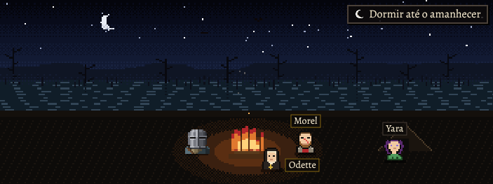
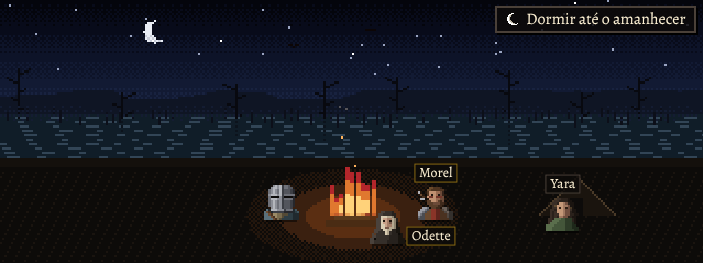
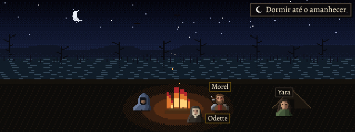
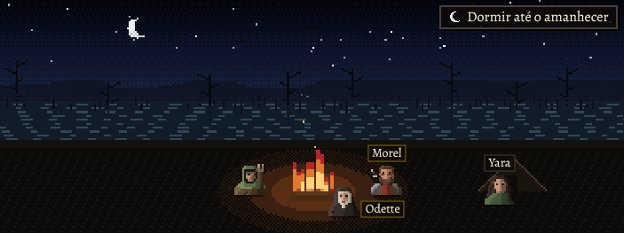

Candidatos para avaliação, desenhados em código pelo método e no enquadramento dos heróis (arte-teste.js): o
busto de 40×40, o recorte da cabeça (24×24, a 48 px: a tela da Comitiva, o cartão da reação, a faixa de quem chega) e a
versão de 16×16 (32 px: o painel e a carta da luta; 16 px: a figura da fogueira). Em produção eles seguem com os
sprites de sempre; as fotografias de baixo põem os candidatos só na página fotografada.
Ampliados, com o que serviu de referência
Morel
"um homem grande", "cicatriz de orelha a orelha"
"armadura remendada com pedaços de outras armaduras"
pendura a espada nas costas; o cabelo castanho e a barba do sprite
Odette
clériga desertora; a touca branca e o véu escuro do sprite
"roupas chamuscadas" ("chamuscadas, não queimadas")
sem a cruz (só o sprite tinha); o rosário do pescoço ficou de fora porque, num dos caminhos, ela o entrega ao herói e o retrato é um só
Yara
"uma moça de cabelo sujo de lama"
os olhos castanhos ("castanhos de novo"); sem o violeta e o brilho do sprite
o vestido verde do sprite, em pano apagado
carta do Morel, ×8carta da Odette, ×8carta da Yara, ×8
Nos tamanhos reais, com os heróis aprovados
No jogo: a fogueira (hoje × candidatos), com cada herói

hoje (os sprites de sempre)

candidatos, com o Guerreiro

com o Mago

com o Arqueiro
No jogo: o painel e a tela da Comitiva (Morel ferido)